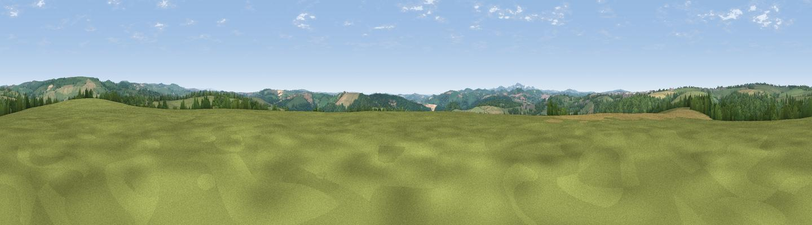

Long Downs
#20997 in England · top 42% of its area beats it · near CardinhamWhere it is
The exact computed spot (SX 11282 66980). Click the marker for map links.
The view, rendered

A 360° render of this exact spot computed from the terrain model, tree cover and land cover — summer colours, afternoon light, calibrated against photographs of famous viewpoints. Real trees, hedges and buildings will differ in detail.
The panorama
Grey silhouette: terrain skyline in each direction (720 bearings, Earth curvature and refraction included). Dashed green: skyline with trees (+15 m) and buildings (+8 m) as obstacles. Blue strip: how far the ground is visible on each bearing.
Where the view opens
Wedge length = distance to the farthest visible ground on that bearing (vegetation-aware). Rings at 10, 25 and 50 km.
What fills the view
60% grassland · 27% woodland · 11% cropland · 2% built-up
Angular shares of the visible panorama (visual magnitude), not map area. Landscape diversity 0.43 (0–1 Shannon).
Key numbers
More beautiful places nearby
The staircase of upgrades: each row has a higher view potential than everything closer. Driving times are estimates from straight-line distance, calibrated against real road routing — check an actual route before setting out.
| Place | Direction | Drive | Score |
|---|---|---|---|
| Viewpoint near Cardinham | SSE · 3 km | ~8 min | 58.0 |
| Viewpoint near Cardinham | NE · 3 km | ~8 min | 71.1 |
| Viewpoint near Lanivet | SW · 6 km | ~12 min | 73.1 |
| Berry Down | ENE · 9 km | ~17 min | 73.5 |
| Viewpoint near Lanreath | SE · 11 km | ~21 min | 75.7 |
| Brown Willy | NNE · 14 km | ~25 min | 77.3 |
| Viewpoint near Trethurgy | SSW · 15 km | ~26 min | 84.1 |
| Viewpoint near Stenalees | SW · 15 km | ~26 min | 88.0 |
50.47219, -4.66086 · source: dobih hill · position refined by local search. Computed location — check access rights before visiting.